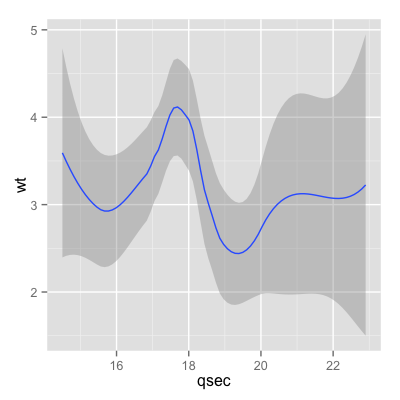
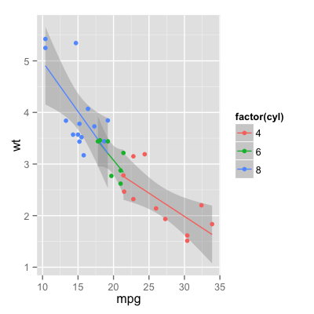

Add a smoother.
Usage
stat_smooth(mapping = NULL, data = NULL, geom = "smooth", position = "identity",
method = "auto", formula = y ~ x, se = TRUE, n = 80, fullrange = FALSE, level = 0.95,
na.rm = FALSE, ...)
Arguments
- method
- smoothing method (function) to use, eg. lm,
glm, gam, loess, rlm. For datasets with n < 1000 default
is
loess. For datasets with 1000 or more observations defaults to gam, seegamfor more details. - formula
- formula to use in smoothing function, eg.
y ~ x,y ~ poly(x, 2),y ~ log(x) - se
- display confidence interval around smooth? (TRUE by default, see level to control
- fullrange
- should the fit span the full range of the plot, or just the data
- level
- level of confidence interval to use (0.95 by default)
- n
- number of points to evaluate smoother at
- na.rm
- If
FALSE(the default), removes missing values with a warning. IfTRUEsilently removes missing values. - ...
- other arguments are passed to smoothing function
- mapping
- The aesthetic mapping, usually constructed
with
aesoraes_string. Only needs to be set at the layer level if you are overriding the plot defaults. - data
- A layer specific dataset - only needed if you want to override the plot defaults.
- geom
- The geometric object to use display the data
- position
- The position adjustment to use for overlappling points on this layer
Value
a data.frame with additional columns ypredicted value yminlower pointwise confidence interval around the mean ymaxupper pointwise confidence interval around the mean sestandard error
Description
Aids the eye in seeing patterns in the presence of overplotting.
Details
Calculation is performed by the (currently undocumented)
predictdf generic function and its methods. For
most methods the confidence bounds are computed using the
predict method - the exceptions are
loess which uses a t-based approximation, and for
glm where the normal confidence interval is
constructed on the link scale, and then back-transformed
to the response scale.
Aesthetics
stat_smooth understands the following aesthetics (required aesthetics are in bold):
-
x -
y
Examples
c <- ggplot(mtcars, aes(qsec, wt)) c + stat_smooth()geom_smooth: method="auto" and size of largest group is <1000, so using loess. Use 'method = x' to change the smoothing method.
c + stat_smooth() + geom_point()geom_smooth: method="auto" and size of largest group is <1000, so using loess. Use 'method = x' to change the smoothing method.# Adjust parameters c + stat_smooth(se = FALSE) + geom_point()geom_smooth: method="auto" and size of largest group is <1000, so using loess. Use 'method = x' to change the smoothing method.c + stat_smooth(span = 0.9) + geom_point()geom_smooth: method="auto" and size of largest group is <1000, so using loess. Use 'method = x' to change the smoothing method.c + stat_smooth(level = 0.99) + geom_point()geom_smooth: method="auto" and size of largest group is <1000, so using loess. Use 'method = x' to change the smoothing method.c + stat_smooth(method = "lm") + geom_point()
library(splines) library(MASS) c + stat_smooth(method = "lm", formula = y ~ ns(x,3)) + geom_point()c + stat_smooth(method = rlm, formula= y ~ ns(x,3)) + geom_point()
# The default confidence band uses a transparent colour. # This currently only works on a limited number of graphics devices # (including Quartz, PDF, and Cairo) so you may need to set the # fill colour to a opaque colour, as shown below c + stat_smooth(fill = "grey50", size = 2, alpha = 1)geom_smooth: method="auto" and size of largest group is <1000, so using loess. Use 'method = x' to change the smoothing method.c + stat_smooth(fill = "blue", size = 2, alpha = 1)geom_smooth: method="auto" and size of largest group is <1000, so using loess. Use 'method = x' to change the smoothing method.# The colour of the line can be controlled with the colour aesthetic c + stat_smooth(fill="blue", colour="darkblue", size=2)geom_smooth: method="auto" and size of largest group is <1000, so using loess. Use 'method = x' to change the smoothing method.c + stat_smooth(fill="blue", colour="darkblue", size=2, alpha = 0.2)geom_smooth: method="auto" and size of largest group is <1000, so using loess. Use 'method = x' to change the smoothing method.c + geom_point() + stat_smooth(fill="blue", colour="darkblue", size=2, alpha = 0.2)geom_smooth: method="auto" and size of largest group is <1000, so using loess. Use 'method = x' to change the smoothing method.# Smoothers for subsets c <- ggplot(mtcars, aes(y=wt, x=mpg)) + facet_grid(. ~ cyl) c + stat_smooth(method=lm) + geom_point()c + stat_smooth(method=lm, fullrange = TRUE) + geom_point()# Geoms and stats are automatically split by aesthetics that are factors c <- ggplot(mtcars, aes(y=wt, x=mpg, colour=factor(cyl))) c + stat_smooth(method=lm) + geom_point()
c + stat_smooth(method=lm, aes(fill = factor(cyl))) + geom_point()c + stat_smooth(method=lm, fullrange=TRUE, alpha = 0.1) + geom_point()# Use qplot instead qplot(qsec, wt, data=mtcars, geom=c("smooth", "point"))geom_smooth: method="auto" and size of largest group is <1000, so using loess. Use 'method = x' to change the smoothing method.
# Example with logistic regression data("kyphosis", package="rpart") qplot(Age, Kyphosis, data=kyphosis)qplot(Age, data=kyphosis, facets = . ~ Kyphosis, binwidth = 10)qplot(Age, Kyphosis, data=kyphosis, position="jitter")qplot(Age, Kyphosis, data=kyphosis, position=position_jitter(height=0.1))qplot(Age, as.numeric(Kyphosis) - 1, data = kyphosis) + stat_smooth(method="glm", family="binomial")qplot(Age, as.numeric(Kyphosis) - 1, data=kyphosis) + stat_smooth(method="glm", family="binomial", formula = y ~ ns(x, 2))